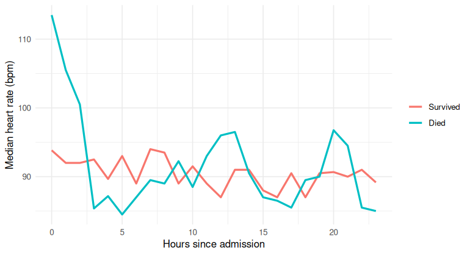

Harmonized data: reading, reshaping and plotting
Source:vignettes/harmonized-data.Rmd
harmonized-data.Rmdehr_connect() stores the connection details; it does not
test them until the first query, so a bad login fails at the first read,
not at connect time.
merge_sources() pools every source into one PostgreSQL
schema. The schema holds the cohort table, the admission-level flat
table, the long time-series table and the duration table. The
load_merged_*() functions read them; each takes the schema
name you gave merge_sources() (here
"rendehr").
cohort <- load_merged_cohort_info("rendehr")
nrow(cohort)
#> [1] 57
length(unique(cohort$src_patient_id))
#> [1] 47cohort_only = TRUE is the default: it returns the
members of the cohort definition. FALSE returns every
imported row, including context that was carried along for look-back but
is not part of the cohort.
One row per admission
The flat table is the analysis frame: one row per admission, with demographics, admission characteristics, outcomes, and the first ICU stay’s identifiers.
flat <- load_merged_flat("rendehr")
dim(flat)
#> [1] 57 34
flat[1:4, c("src_patient_id", "age", "sex", "admission_type",
"hospital_los", "hospital_mortality")]
#> src_patient_id age sex admission_type hospital_los hospital_mortality
#> 1 10002428 81.3 female emergency 2.83 0
#> 2 10002428 81.4 female emergency 10.98 0
#> 3 10002428 81.3 female emergency 17.09 0
#> 4 10002495 81.4 male urgent 6.89 0The ehr_id column is the cross-source key. It identifies
the same admission in every merged table, so joins never depend on a
source-specific ID.
Long time series
The time-series table has one row per measurement:
concept_name, time and value, in a common unit per concept.
cols = "minimal" keeps only the columns needed for analysis
and transfers less data.
lab <- load_merged_ts(
"rendehr", concepts = c("heart_rate", "lactate"),
cols = "minimal"
)
dim(lab)
#> [1] 10513 8
head(lab)
#> ehr_id source_data src_admission_id concept_name value unit
#> 1 10002428_20321825 mimic_iv_demo 20321825 heart_rate 112 bpm
#> 2 10002428_20321825 mimic_iv_demo 20321825 heart_rate 102 bpm
#> 3 10002428_20321825 mimic_iv_demo 20321825 heart_rate 105 bpm
#> 4 10002428_20321825 mimic_iv_demo 20321825 heart_rate 98 bpm
#> 5 10002428_20321825 mimic_iv_demo 20321825 heart_rate 87 bpm
#> 6 10002428_20321825 mimic_iv_demo 20321825 heart_rate 86 bpm
#> time_since_hadm_min time_since_icu_min
#> 1 113 35
#> 2 127 49
#> 3 145 67
#> 4 205 127
#> 5 265 187
#> 6 325 247Time is carried twice: time_since_hadm_min measures from
hospital admission, time_since_icu_min from ICU admission.
Both are in minutes, so the same table supports admission-level and
ICU-level analyses. window_min = c(0, 1440) keeps the first
24 hours in SQL, on the admission clock or, with
window_ref = "icu", the ICU clock.
One patient’s stay, in the long format:
pid <- flat$src_patient_id[1]
one <- get_patient_ts("mimic_iv_demo", pid, concepts = "heart_rate")
head(one[, c("concept_name", "time_since_icu_min", "value", "unit")])
#> concept_name time_since_icu_min value unit
#> 1 heart_rate 35 112 bpm
#> 2 heart_rate 49 102 bpm
#> 3 heart_rate 67 105 bpm
#> 4 heart_rate 127 98 bpm
#> 5 heart_rate 187 87 bpm
#> 6 heart_rate 247 86 bpmget_patient_*() functions read the source schema
directly, which is useful when you need a single stay rather than a
cohort-wide extract. get_patient_flat() returns one row per
admission.
Wide by time bin
load_merged_ts_wide() pivots in SQL: name the concepts
and the aggregates you want, choose a bin width in minutes, and
optionally a window in bin units. With hourly bins,
window = c(0, 23) keeps the first 24 hours.
day1 <- load_merged_ts_wide(
"rendehr",
spec = list(heart_rate = c("mean", "max"), lactate = "max", sbp = "min"),
bin_min = 60, window = c(0, 23)
)
dim(day1)
#> [1] 1055 9
head(day1[, c("ehr_id", "t_bin", "heart_rate_mean", "heart_rate_max", "lactate")])
#> ehr_id t_bin heart_rate_mean heart_rate_max lactate
#> 1 10002428_20321825 1 112.0 112 NA
#> 2 10002428_20321825 2 103.5 105 0.8
#> 3 10002428_20321825 3 98.0 98 NA
#> 4 10002428_20321825 4 87.0 87 NA
#> 5 10002428_20321825 5 86.0 86 NA
#> 6 10002428_20321825 6 89.0 89 NAOne aggregate per concept names the column after the concept
(lactate); two or more add the aggregate
(heart_rate_mean, heart_rate_max).
complete_grid = TRUE emits every bin in the window, with
NA where a concept was not measured. It regularises the
shape only; it does not decide who is eligible for the analysis.
clean = "range" drops readings outside each concept’s
plausible range in the concept dictionary before aggregating;
ranges overrides the bounds. Each concept gains a
<concept>_n_cleaned column with the readings dropped
in that bin, and the clean_report attribute gives the
totals and bounds per concept:
day1_clean <- load_merged_ts_wide(
"rendehr", spec = list(heart_rate = "max", lactate = "max"),
bin_min = 60, window = c(0, 23), clean = "range"
)
attr(day1_clean, "clean_report")
#> concept_name n n_cleaned n_not_numeric min_value max_value
#> 1 heart_rate 1377 0 0 0 300
#> 2 lactate 135 0 0 0 50Plotting the cohort’s heart rate over the first day is then a join and a line:
library(ggplot2)
d <- merge(day1, flat[, c("ehr_id", "hospital_mortality")], by = "ehr_id")
agg <- aggregate(heart_rate_mean ~ t_bin + hospital_mortality, data = d,
FUN = median, na.rm = TRUE)
ggplot(agg, aes(t_bin, heart_rate_mean,
colour = factor(hospital_mortality,
labels = c("Survived", "Died")))) +
geom_line(linewidth = 1) +
labs(x = "Hours since admission", y = "Median heart rate (bpm)",
colour = NULL) +
theme_minimal()
plot of chunk trajectory
Durations
The duration table has one row per interval concept: drug exposure,
ventilation, and other state that lasts. duration_min is
the length in minutes.
dur <- load_merged_dur("rendehr")
dim(dur)
#> [1] 13094 18
head(dur[, c("ehr_id", "concept_name", "duration_min")])
#> ehr_id concept_name duration_min
#> 1 10005817_20626031 acetaminophen_exp 1
#> 2 10005817_20626031 acetaminophen_exp 1
#> 3 10005817_20626031 acetaminophen_exp 1
#> 4 10005817_20626031 acetaminophen_exp 1
#> 5 10005817_20626031 acetaminophen_exp 1
#> 6 10020740_25826145 acetaminophen_exp 1What is in the schema
list_concepts() reports the concepts available for a
source and their layer: the package dictionary, adapted derived
concepts, your own SQL, and external modules.
concept_summary() gives counts and value summaries for one
concept.
concepts <- list_concepts("mimic_iv_demo")
table(concepts$schema)
#>
#> concepts derived
#> 238 63
concepts[concepts$concept_name %in% c("lactate", "creatinine", "sofa"),
c("concept_name", "schema", "origin_name")]
#> concept_name schema origin_name
#> 80 creatinine concepts rendehR package
#> 174 lactate concepts rendehR package
#> 272 sofa derived rendehR package (adapted from MIT-LCP)
concept_summary("mimic_iv_demo", "lactate")
#> $concept
#> [1] "lactate"
#>
#> $source
#> [1] "mimic_iv_demo"
#>
#> $schema
#> [1] "mimic_iv_demo_coh_concepts"
#>
#> $row_count
#> integer64
#> [1] 522
#>
#> $patient_count
#> integer64
#> [1] 45
#>
#> $columns
#> [1] "subject_id" "hadm_id" "stay_id"
#> [4] "time_since_hadm_min" "time_since_icu_min" "icu_los_min"
#> [7] "value" "unit" "value_raw"
#> [10] "unit_raw" "source_itemid" "source_label"
#> [13] "event_id" "event_level" "native_id_level"
#> [16] "time_precision" "dedup_candidate" "source_table"
#> [19] "source_dataset"
#>
#> $value_min
#> [1] 0.5
#>
#> $value_max
#> [1] 13.2
#>
#> $value_mean
#> [1] 2.581
#>
#> $value_median
#> [1] 1.85Related articles
-
vignette("cohorts"): how the cohort behind this schema was selected -
vignette("pipeline"): the stages that produce each table -
vignette("concepts"): the concept layers and adding your own